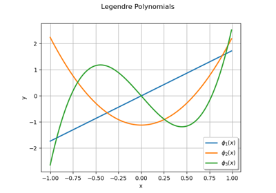
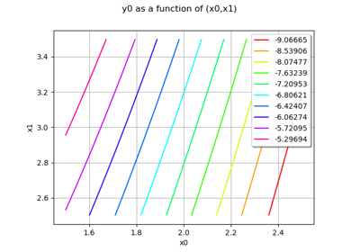
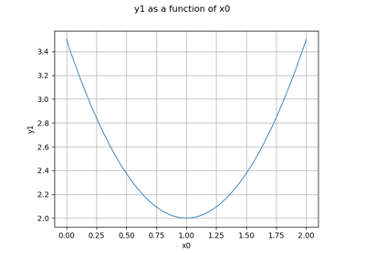
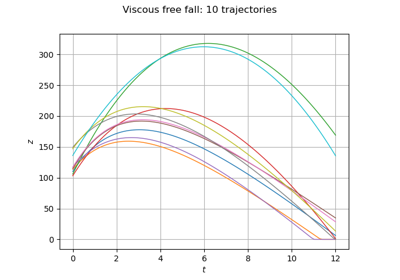
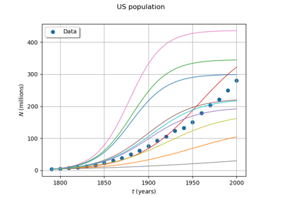

Functional modeling¶
Univariate functions¶

Create univariate functions
Vectorial functions¶



Create a symbolic function

Create a quadratic function


Defining Python and symbolic functions: a quick start introduction to functions
Defining Python and symbolic functions: a quick start introduction to functions

Functional basis¶

Create a multivariate basis of functions from scalar multivariable functions
Create a multivariate basis of functions from scalar multivariable functions
Field functions¶



Define a function with a field output: the viscous free fall example
Define a function with a field output: the viscous free fall example


Logistic growth model